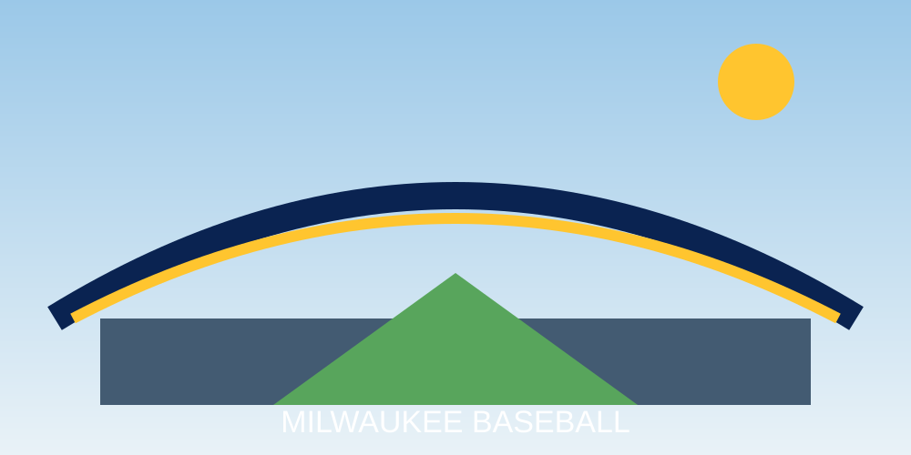

American Family Field

American Family Field is the Brewers' home ballpark. It opened in 2001 and is best known for its fan-shaped retractable roof, which helps protect games from Wisconsin's unpredictable spring and fall weather.
The stadium was originally named Miller Park and was renamed American Family Field beginning with the 2021 season.
A First-Timer's Game Day
- Arrive early enough to experience the parking-lot tailgating tradition.
- Walk the concourses and look for displays about Milwaukee baseball history.
- Find your seat before the first pitch and watch the roof if weather is nearby.
- Stay alert for the Famous Racing Sausages during the middle innings.
- After the final out, allow extra time for traffic leaving the stadium lots.
Ballpark Features
The retractable roof is the stadium's signature engineering feature. When conditions allow, the panels open to create an outdoor-ballpark feeling while retaining the ability to close when rain or cold weather threatens.